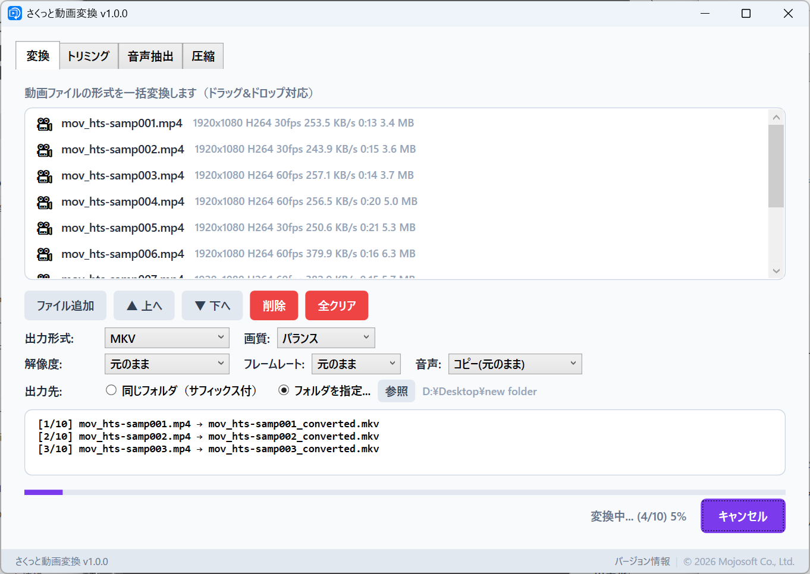
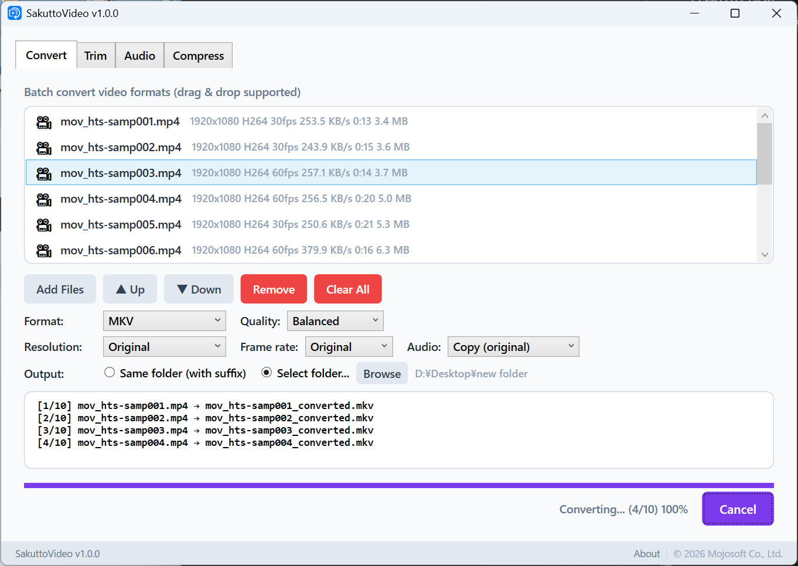
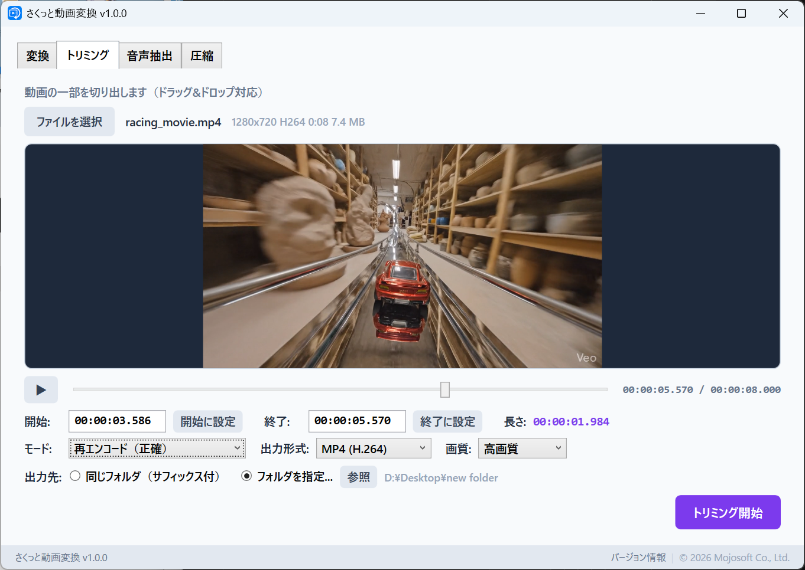
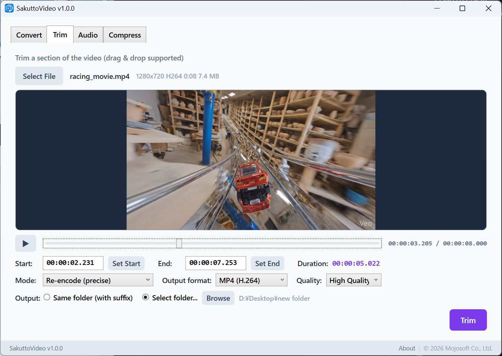
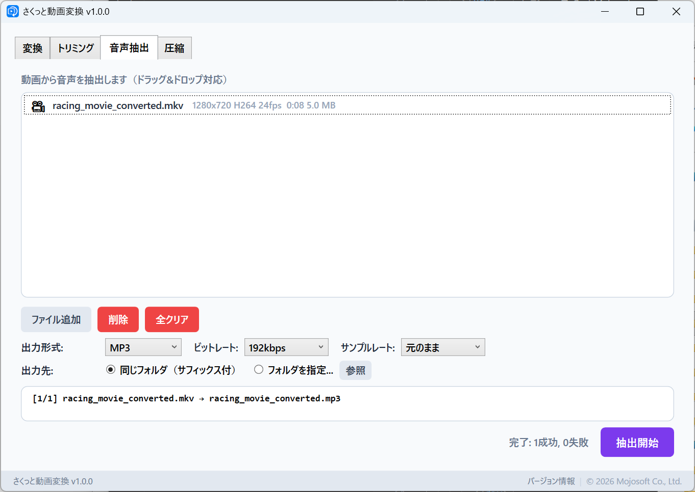
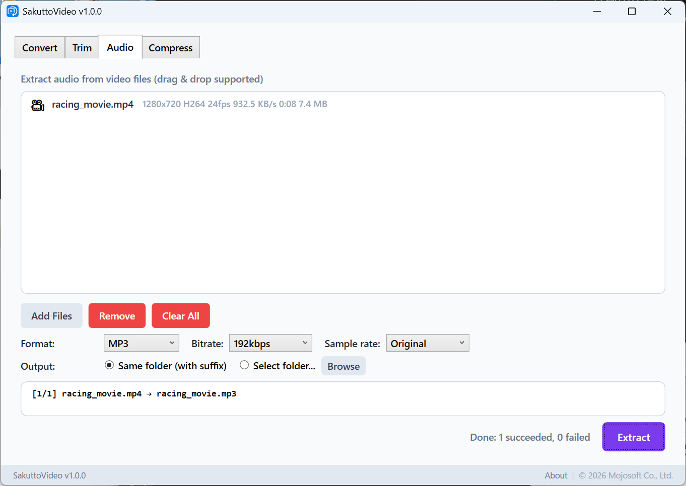
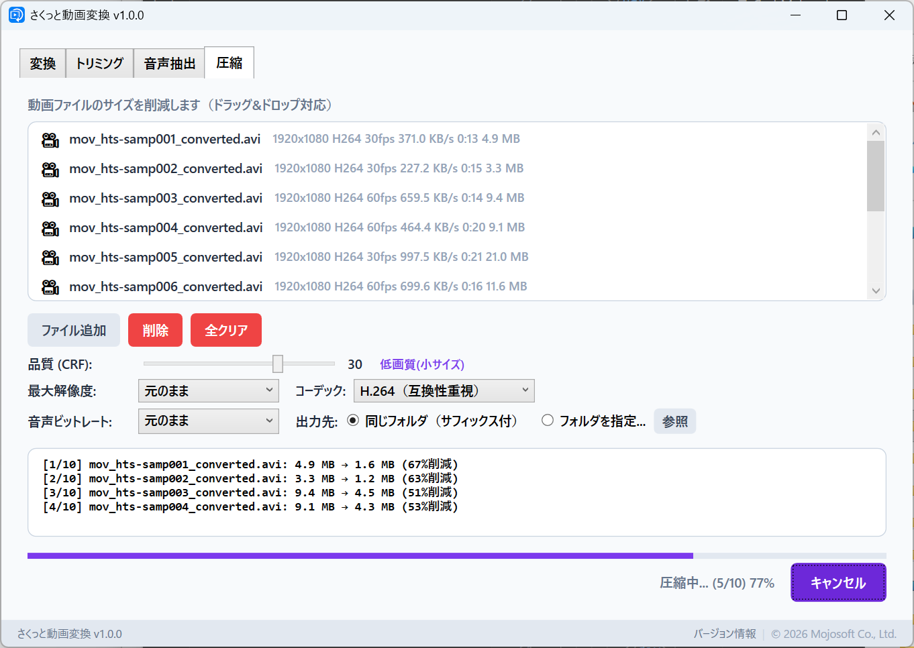
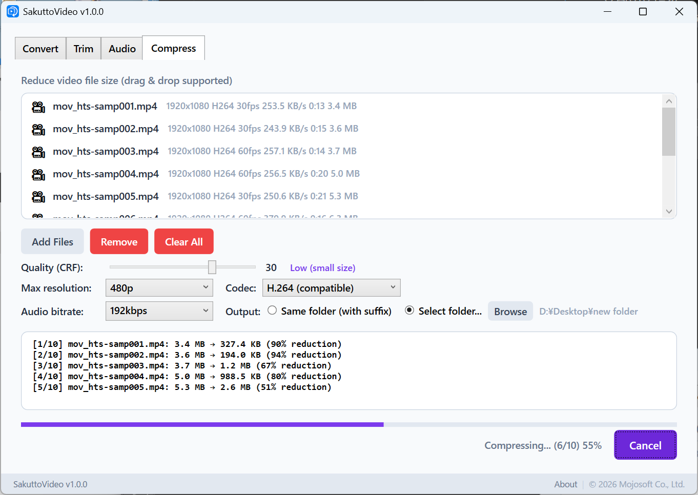

変換・トリミング・音声抽出・圧縮
4つの機能をシンプルなひとつのアプリに。
Convert, Trim, Extract Audio & Compress
4 powerful features in one simple app.
動画の変換・編集がこのアプリひとつで完結します。One app covers all the video tasks you need.
MP4(H.264/H.265)・WebM(VP9)𰾺VI・MKV・MOV・GIFへ一括変換。複数ファイルをまとめて処理。Batch convert to MP4 (H.264/H.265), WebM (VP9), AVI, MKV, MOV, or GIF. Process multiple files at once.
プレビュー再生しながら開始・終了時刻を設定。必要な部分だけ切り出し。Set start/end times while previewing playback. Cut out exactly the part you need.
動画からMP3�・WAV𰾿LAC・OGGで音声を抽出。複数ファイルの一括処理に対応。Extract audio from video as MP3, AAC, WAV, FLAC, or OGG. Batch processing supported.
CRFスライダーで画質と圧縮率を直感的にコントロール。ファイルサイズを大幅削減。Intuitively control quality and compression with a CRF slider. Dramatically reduce file sizes.
実際のアプリの画面をご覧ください。See the app in action.


複数の動画をドラッグ&ドロップで追加し、MP4・WebM𰾺VI・MKV・MOV・GIFに一括変換。画質プリセットや解像度も設定可能。Add multiple videos via drag & drop, then batch convert to MP4, WebM, AVI, MKV, MOV, or GIF. Configure quality presets and resolution.


プレビュー再生しながら開始・終了時刻を指定。無劣化コピーなら高速に、再エンコードならフレーム単位で正確に切り出し。Set start/end times while previewing playback. Lossless copy for speed, or re-encode for frame-accurate cutting.


動画から音声だけをMP3�・WAV𰾿LAC・OGGで抽出。ビットレートやサンプルレートも細かく指定可能。Extract audio from video as MP3, AAC, WAV, FLAC, or OGG. Fine-tune bitrate and sample rate settings.


CRFスライダーで圧縮率を微調整。H.264/H.265コーデック選択、最大解像度制限、圧縮前後のサイズ比較をリアルタイム表示。Fine-tune compression with a CRF slider. Choose H.264 or H.265 codec, set max resolution, and view real-time before/after size comparison.
日常の動画作業を、もっとシンプルに。Make your daily video tasks simpler.
インストールしたらすぐ起動。アカウント登録もログインも不要です。Launch right after install. No account signup or login required.
MP4・WebM𰾺VI・MKV・MOV・GIF。よく使う動画形式をすべてカバー。MP4, WebM, AVI, MKV, MOV, GIF. All common video formats covered.
OSの言語設定に合わせて自動で切り替わります。Automatically switches based on your OS language setting.
すべての処理はPC上で完結。ファイルが外部に送信されることはありません。All processing stays on your PC. Your files are never sent to any server.
月額課金なし。一度購入すればずっと使えます。No subscription fees. Buy once, use forever.
FFmpegベースの高速エンコード。プログレスバーで進捗をリアルタイム確認。FFmpeg-based high-speed encoding. Real-time progress bar included.
動画編集がこんなにラクになります。Video editing has never been this easy.
変換・トリミング・音声抽出・圧縮から、やりたい操作をクリック。Click the tab for the operation you want: convert, trim, extract audio, or compress.
動画ファイルをドラッグ&ドロップ、またはボタンで選択。Drag & drop video files, or select them with the file picker.
ボタンをクリックするだけ。処理結果はすぐに保存されます。Click the button and you're done. Results are saved instantly.
お困りの際はお気軽にお問い合わせください。Feel free to contact us if you need help.
不具合の報告・機能のリクエストBug Reports & Feature Requests
GitHub Issues からご報告いただけます。
Report via GitHub Issues.
お問い合わせContact
Email: support@mojosoft.biz